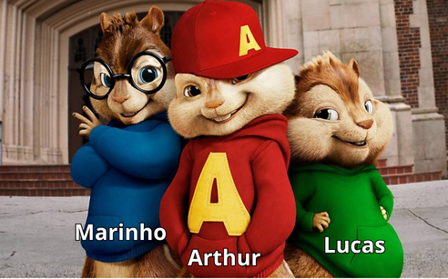
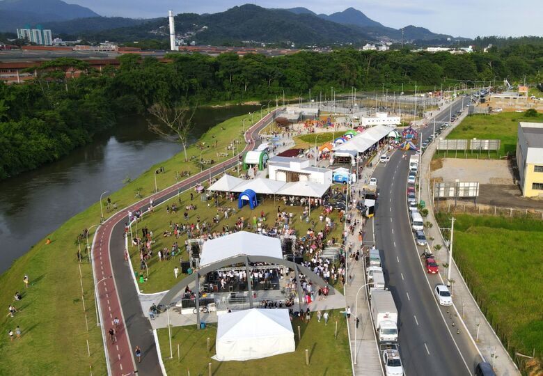
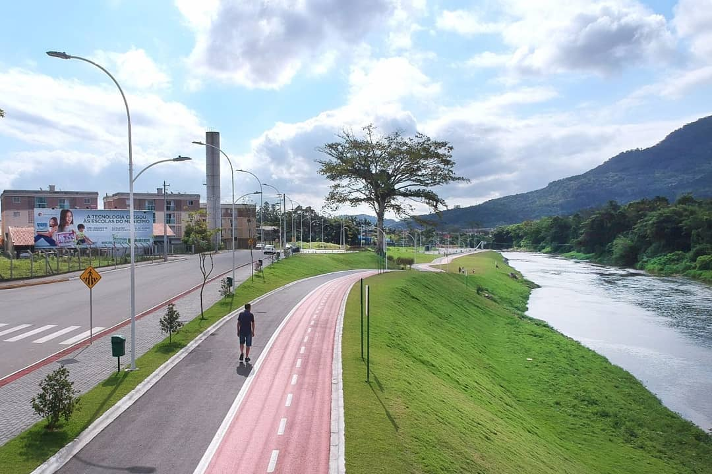
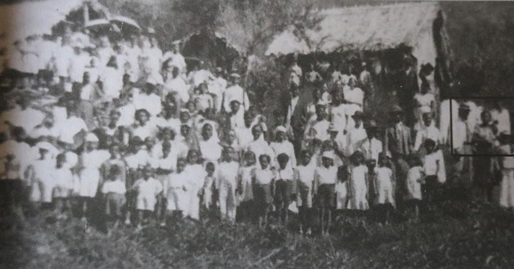
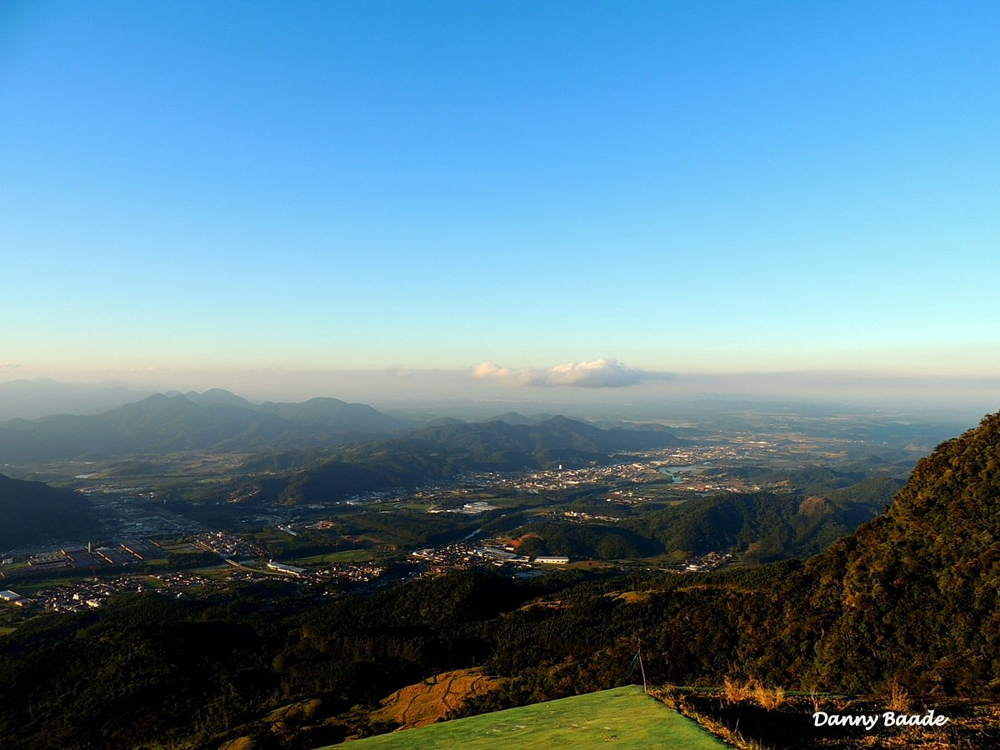
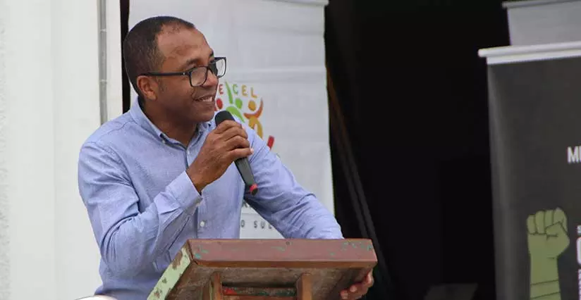
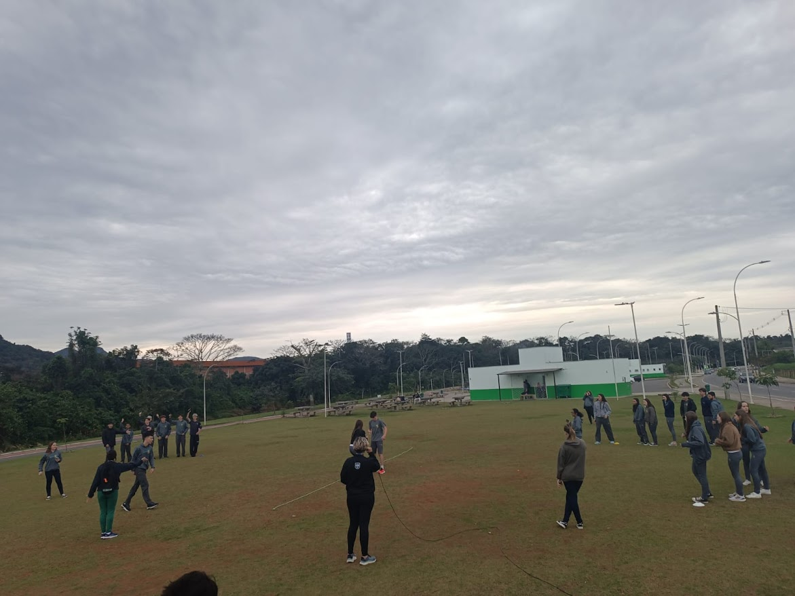
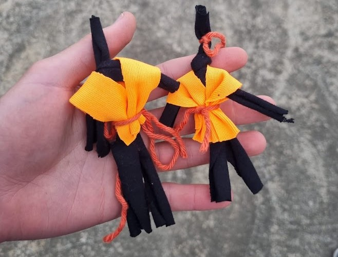

Integrantes do grupo: Lucas Arthur Gabriel Marinho

Foto dos integrantes do grupo com vistas para o Morro
da Boa Vista
Data: 09/08/2024
Local: Parque Linear Via Verde, com vistas para o Morro da Boa Vista.
Objetivos e Justificativa do Trabalho: O objetivo do trabalho é explorar e documentar a importância histórica e cultural do Morro da Boa Vista, especialmente no contexto da imigração de negros e pardos em Jaraguá do Sul. A visitação visa proporcionar uma compreensão mais profunda da influência afro-brasileira na região e a importância de valorizar e preservar essa herança cultural. Além disso, o trabalho busca conscientizar sobre o combate ao racismo e a valorização do protagonismo negro, fortalecendo a identidade cultural afro-brasileira na comunidade local.


HISTÓRIA DO MORRO DA ÁFRICA
O Morro da África, localizado em Jaraguá do Sul, possui uma rica história ligada à imigração de negros e pardos na região. Essa história é detalhada no livro "Memórias do povoado Morro da África e a história dos negros em Jaraguá do Sul", de Egon Lotário Jagnow e Beatriz de Lima Alves, e também foi abordada pelo palestrante Sr. Francisco Valdecir Alves durante a visitação.
A colonização do Morro da África teve início no final do século XIX e início do século XX, quando famílias de descendência africana começaram a se estabelecer na região, atraídas pelas oportunidades de trabalho oferecidas pela agricultura e, mais tarde, pela indústria nascente de Jaraguá do Sul. Essas famílias enfrentaram diversas dificuldades, como a discriminação racial e a falta de recursos, mas conseguiram estabelecer uma comunidade vibrante e resiliente.
Com o tempo, o Morro da África tornou-se um símbolo da resistência e da luta pela preservação da identidade afro-brasileira em Jaraguá do Sul. As memórias dessa comunidade são um testemunho vivo das contribuições dos negros e pardos para o desenvolvimento social, econômico e cultural da cidade. A imigração para o Morro da África não só moldou a geografia humana da região, mas também influenciou as práticas culturais locais, incluindo a música, a culinária e as tradições religiosas, que refletem a rica herança africana.
Essa história é um lembrete da importância de reconhecer e valorizar as contribuições dos afrodescendentes para a formação da sociedade brasileira, bem como da necessidade de continuar a combater o racismo e promover a igualdade racial em todos os níveis.

O Morro da Boa Vista, localizado em Jaraguá do Sul, é um dos pontos mais altos da região, com uma altitude aproximada de 926 metros. Ele faz parte da Serra do Mar, que é uma cadeia montanhosa que se estende ao longo do litoral sudeste do Brasil. A vegetação do Morro da Boa Vista é predominantemente composta por Mata Atlântica, um dos biomas mais ricos em biodiversidade do mundo, abrigando uma grande variedade de espécies de plantas e animais, muitos dos quais são endêmicos e ameaçados de extinção.
O clima na região é subtropical, caracterizado por verões quentes e úmidos, com temperaturas que podem ultrapassar os 30°C, e invernos mais amenos, com temperaturas médias em torno de 15°C. A presença da floresta densa contribui para a umidade do ambiente, resultando em chuvas frequentes, especialmente nos meses de verão.
A ocupação econômica do Morro da Boa Vista e das áreas ao redor começou no final do século XIX, com a chegada das primeiras famílias de imigrantes europeus e afrodescendentes. Essas famílias se dedicaram inicialmente à agricultura de subsistência, cultivando principalmente milho, feijão, e outras culturas alimentares. Com o passar do tempo, a região também se desenvolveu como um local de exploração madeireira, aproveitando a abundância de madeira na Mata Atlântica.

HISTÓRIA E VALORIZAÇÃO DO PROTAGONISMO NEGRO
Em Jaraguá do Sul, o combate ao racismo e a valorização da cultura afro-brasileira são promovidos através de iniciativas como as músicas cantadas com a tabaque, conforme destacado pelo professor Luis Fernando Olegar, presidente do movimento MOCONEVI. Essas atividades culturais buscam preservar e celebrar as tradições afro-brasileiras, além de conscientizar a comunidade sobre a importância da igualdade racial e do respeito às diversidades culturais.


No dia da visitação, fizemos diversas brincadeiras de origem africana, como o pulando o feijão.
Também comemos uma acarajé adaptado, que era feito de feijão fradinho, camarão, peixe e temperos.

Fizemos, por meio de uma oficina de artesanato, um boneca Abayomi, que era feita de pano e também é de origem africana.